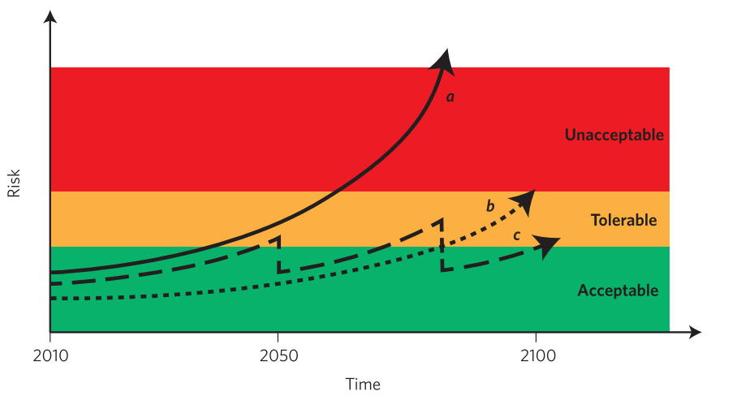
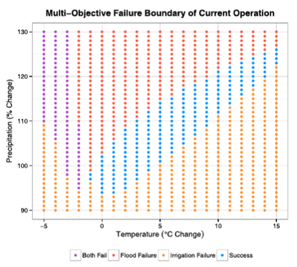
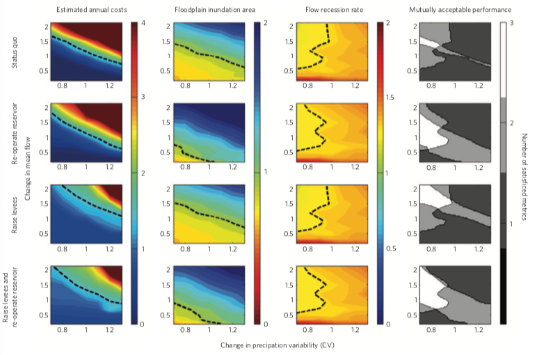
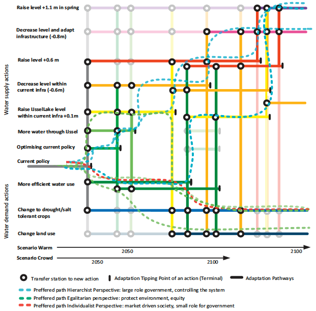
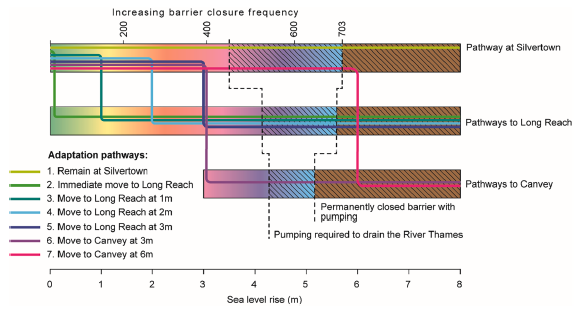
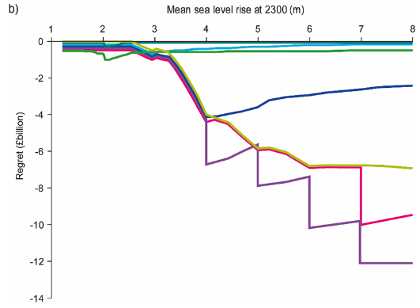

In this lecture we will look at processes for good decision-making, and the various applications of bottom-up risk analysis. The stakeholders are the central actors here, identifying critical thresholds and the preferred adaptation options that can then be systemically tested for suitability by the modeller.
In mini-lectures 14.1-14.3, we discussed the various methods of performing risk analyses that take a wide range of uncertainties into account and identify interventions that are robust against these uncertainties. We often use these types of analyses to perform stress-testing exercises, in which we evaluate under what scenarios an undesirable outcome occurs, as defined by the decision-makers.
In order to identify these undesirable outcomes, or critical thresholds, we need to involve stakeholders early in the process. Stakeholder engagement is essential to (1) guide the modeller by understanding the uncertainty space that they need to consider, and (2) helps to effectively communicate the results.
The various stages of stakeholder engagement are data gathering, identifying gaps, prioritisation of the most important variables, identification of critical thresholds which lead to system failure, and to select suitable solutions to consider.
The critical thresholds are difficult to establish and often depend on the aversion to risk of the decision-maker. The moment a critical threshold is exceeded typically also coincides with the moment a certain decision must be made to, for instance, upgrade the existing infrastructure system. Therefore, these critical moments in time are often referred to as policy tipping points. Figure 14.4.1 illustrates how different paths (a/b/c) lead to different risk outcomes, with the acceptable, tolerable or unacceptable risk states of the system (Hall et al. 2012). A similar analysis can be performed for individual infrastructure assets, networks, or infrastructure systems.

Figure 14.4.1: Three strategies and their resulting risk outcome, which can be either unacceptable, tolerable or acceptable: (a) is the do-nothing scenario in which risk will increase in the future, (b) is the upfront investment scenario to keep risk tolerable, and (c) is the periodic upgrading scenario to keep risk tolerable (Hall et al. 2012)
In the next few sections, we will look at various methods in which a ‘bottom-up’ analysis is adopted to determine suitable pathways to a desirable risk threshold.
A bottom-up analysis, or bottom-up vulnerability analysis, starts with exploring the different thresholds that are deemed to be intolerable, and the associated decisions that must be made when these thresholds are exceeded. This can, for instance, be the amount of sea level rise that flood defences can manage before needing an upgrade, or the changes in temperature and precipitation, which water utilities need to expand storage capacity for.
Through a modelling exercise that uses a range of scenarios of future changes in critical variables, the output with respect to the pre-defined states can be determined. For the scenario leading to the undesirable state, we can estimate what the risk exceeding this state is, and the combination of parameters that lead to this undesirable state (Brown et al. 2012). This combination of parameters and their resulting system state is sometimes called a ‘response surface.’
In Figure 14.4.2, the safe operations space (blue) for a reservoir in northern Italy was evaluated under changes in both temperature and precipitation (Culley et al. 2016). Large changes in precipitation leads to increased flooding, causing the system to fail, while a large increase in temperature leads to irrigation failures (failure to supply water to irrigation). By looking at a large number of climate simulations, the authors could determine the likelihoods that future scenarios are in the non-blue areas.

Figure 14.4.2: A system response surface of a reservoir in northern Italy with changes in temperature and precipitation as the critical parameters. The blue dots illustrate the conditions at which the reservoir can continue to operate (Culley et al. 2016)
In the previous sections, we demonstrated the need for stakeholder engagement throughout the decision-making process in order to make informed and robust decisions. In reality, however, decision-makers often have different priorities and have varying opinions on acceptable thresholds and the type of adaptation options that they prefer. A multi-stakeholder platform is therefore needed to create a consensus on the critical thresholds to use for design.
Moreover, alongside choosing the adaptation options that effectively reduce risk and are cost-efficient, other objectives can be set for the analysis. For instance, a study looked at suitable adaptation options (raising levees, re-operating reservoirs) for the Iowa river (United States) in terms of flood protection (floodplain inundation), but also in terms of their implications for the ecology of the river (flow recession) (Poff et al. 2016). In this example, illustrated in Figure 14.4.3, they showed how mutually acceptable adaptation options could be identified given the uncertainty in precipitation and streamflow. In the end, a combination of raising levees and re-operating the reservoirs had the largest acceptable solution space (see Figure 14.4.3 right panels).
Therefore, it is important to come up with suitable indicators beforehand that meet the demands of all stakeholders involved. In some cases, synergies between different objectives can be identified, whereas in other cases trade-offs exist. In this example, the latter was true; where in the status-quo (top panels Figure 14.4.3) there is only a very small overlap (right panels) between the available budget (left panels), the acceptable flood risk (middle-left panels) and the ecosystem health criteria (middle-right panels).

Figure 14.4.3: The solution space of acceptable outcomes (white in right panels) taking into account cost constraints (left), flood risk reduction (middle-left) and ecology (middle-right). The top row is the status quo, while the next three rows cover different adaptation options. The solution space is set out against changes in precipitation and mean river flow (Poff et al. 2016)
Apart from identifying when and if a certain failure state will be reached, it is important to evaluate when decisions have to be made and, if multiple options can be considered over time, what pathways leads to the most optimal decisions over time. Therefore, insights into the evolution of the system over time and the different sequential decision-making options are essential.
This is important for two reasons:
Infrastructure interventions sometimes have long lead times. Thus, knowing when decisions must be made to plan and implement adaptation options, in order to prevent a critical threshold from exceeding, is important for decision-making.
At the time a decision has to be made, it might not yet be clear if this intervention was indeed required. Methods such as ‘dynamic adaptive policy pathways’ may assist in this process (Haasnoot et al. 2013).
This approach is illustrated in Figure 14.4.4 for adapting the Dutch water supply system to climate change and socio-economic growth (Haasnoot et al. 2013). A large number of options are evaluated (y-axis). After implementing such options, critical tipping points may eventually be exceeded, which will require a jump to another intervention. By evaluating all combinations, and their associated lead times, benefits and costs, the most optimal adaptive pathways can be identified, including the moment when new actions should be taken. This type of approach presents a blueprint for planning and helps to easily communicate this to policymakers.

Figure 14.4.4: An example of the application of dynamic adaptative pathways for the water supply system of The Netherlands. The (thick) coloured lines show all possible pathways to maintain system functioning until 2100 without exceeding any adaptation tipping points (Haasnoot et al. 2013)
A similar exercise has been carried out to identify adaptation pathways for the city of London. Within the Thames Estuary 2100 project, adaptation options to prevent the city from being flooded had to be designed, looking ahead almost 300 years (Hall, Harvey, and Manning 2019).
The main objective was to decide whether or when to raise the existing Thames barrier or move it to another location, which depends on the expected rate of sea level rise. If the existing barrier has to be closed too frequently, very large pumping quantities are needed to discharge water out of the river. Within the scenarios, the barrier can be moved from the existing location in Silvertown to new locations in Long Reach or Canvey, which reduce the flood risk.
Costs are associated with each solution, covering both upfront costs and variable costs. For instance, increasing the crest levels of defences has a large upfront cost, but the variable costs are relatively low, e.g. overdesigning the crest levels can be done at relatively low additional cost.
There is a range of feasible and mutually exclusive adaptation pathways (see Figure 14.4.5). Different critical sea level rise thresholds were identified that lead to a shift in the location of the barrier. The differences between the pathways and their costs can be compared, resulting in the potential of decision regrets: the total investment costs + the residual risk of the decision relative to the best performing one. This is shown in Figure 14.4.6, showing that under very large sea level rise values (>3m), both staying at Silvertown and moving towards Canvey are extremely costly given the risk benefits they provide.

Figure 14.4.5: The different adaptation pathways as a function of the rise in sea level by 2300 (Hall, Harvey, and Manning 2019)

Figure 14.4.6: The regret of choosing a certain pathway compared to the best performing pathway given different sea level rise scenarios for 2300 (Hall, Harvey, and Manning 2019)
In this lecture, we looked at processes for good decision-making that start with the identification and involvement of all stakeholders. These stakeholders are important as they help identify tolerable risk thresholds and acceptable adaptation options. Moreover, different methodologies are presented to identify and communicate suitable adaptation pathways towards resilience.